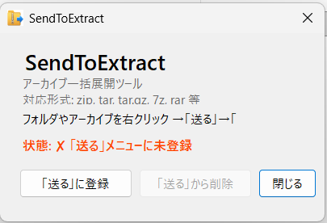
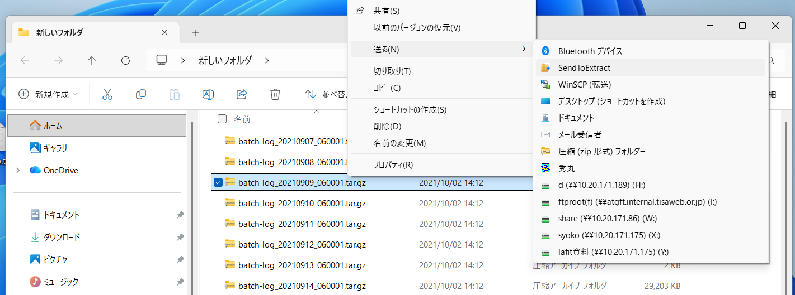
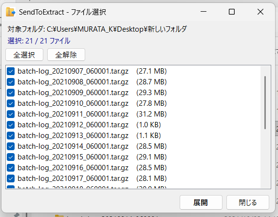
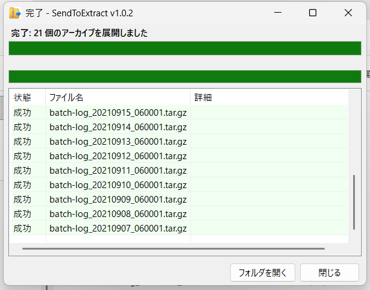

右クリック → 送る → 一括展開
Windows の「送る」メニューからアーカイブをまとめて展開。面倒な解凍作業を一瞬で。
無料ダウンロードexe ひとつで、あらゆるアーカイブをかんたんに展開
zip, tar.gz, 7z, rar など主要な形式をすべてサポート
右クリック→「送る」で一括展開。ファイル選択画面で確認してから展開
CP932（Shift_JIS）のファイル名も文字化けなし
exe 1つで動作。.NET ランタイムは不要。好きな場所に置くだけ
ダウンロードから展開完了まで、わずか数クリック
zip を解凍して SendToExtract.exe を好きな場所に配置。ダブルクリックして「送る」に登録ボタンを押すだけ。

展開したいフォルダやファイルを右クリックし、「送る」メニューから「SendToExtract」を選択。

フォルダ内のアーカイブが一覧表示されます。展開するファイルをチェックして「展開」ボタン。

進捗バーで展開状況をリアルタイム確認。完了後は「フォルダを開く」で展開先をすぐに確認できます。

主要なアーカイブ形式をすべてカバー
%APPDATA%\SendToExtract\settings.json で変更可能
| 設定項目 | 初期値 | 説明 |
|---|---|---|
collisionPolicy | Rename | 展開先が既にある場合の処理（Skip / Rename / Overwrite） |
flattenSingleRoot | true | 二重ラップ平坦化（name/name/... → name/...） |
recurseSubfolders | false | サブフォルダも再帰的に探索 |
無料でダウンロード。レジストリ汚さず、アンインストールも削除するだけ。
無料ダウンロード（v1.0.2） GitHub でソースコードを見る